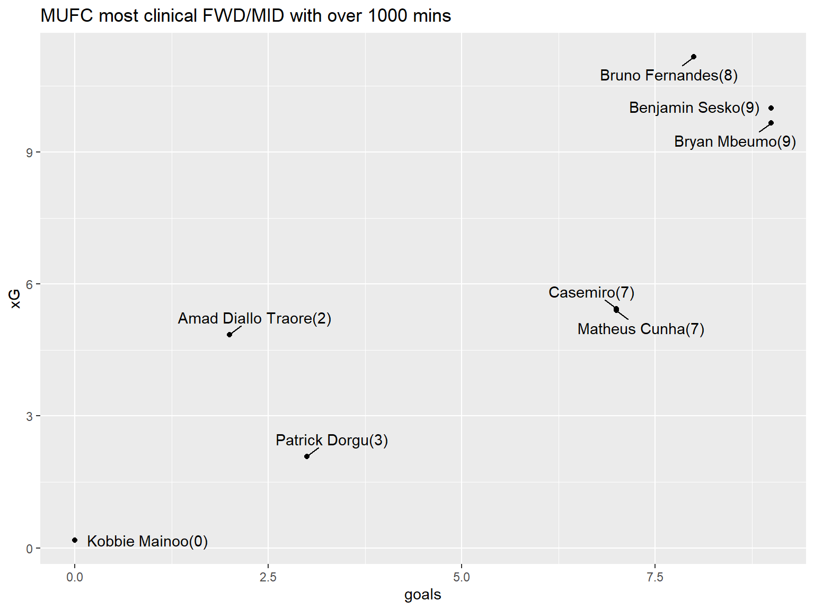
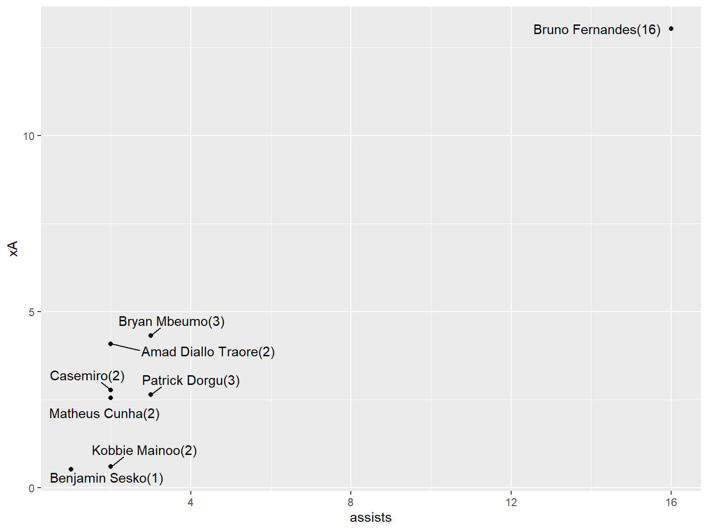
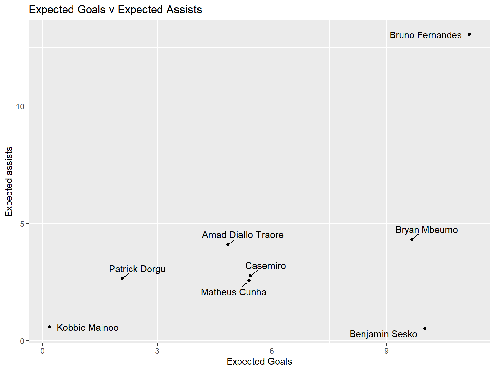
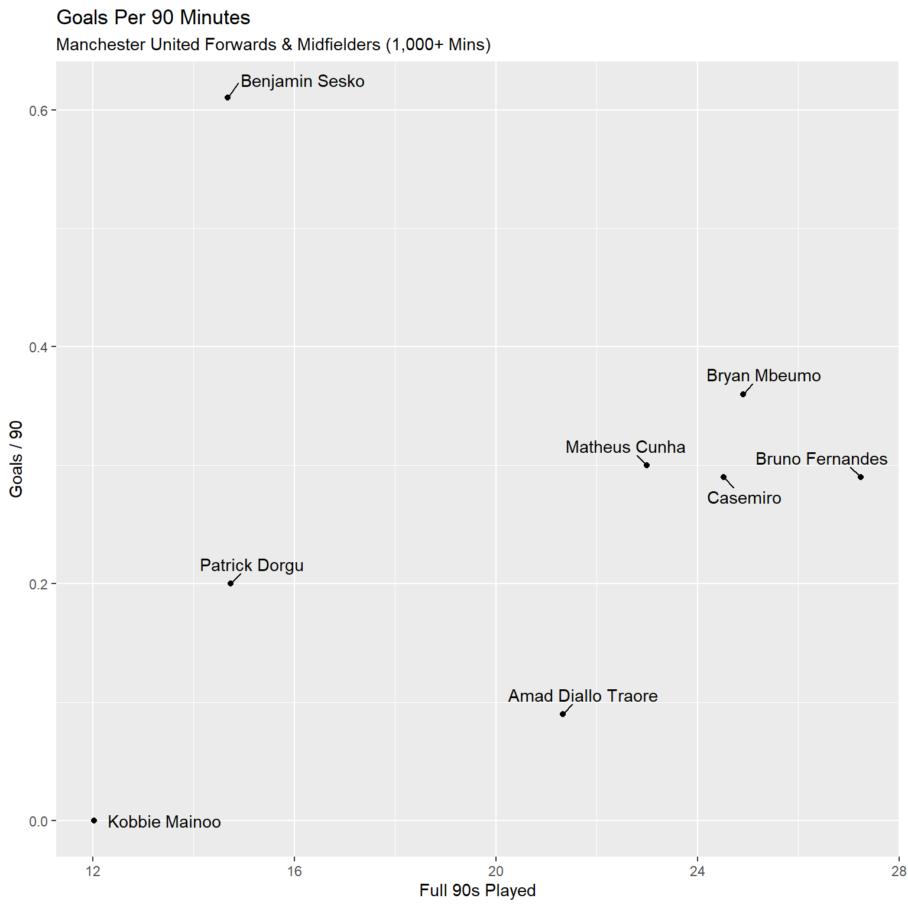
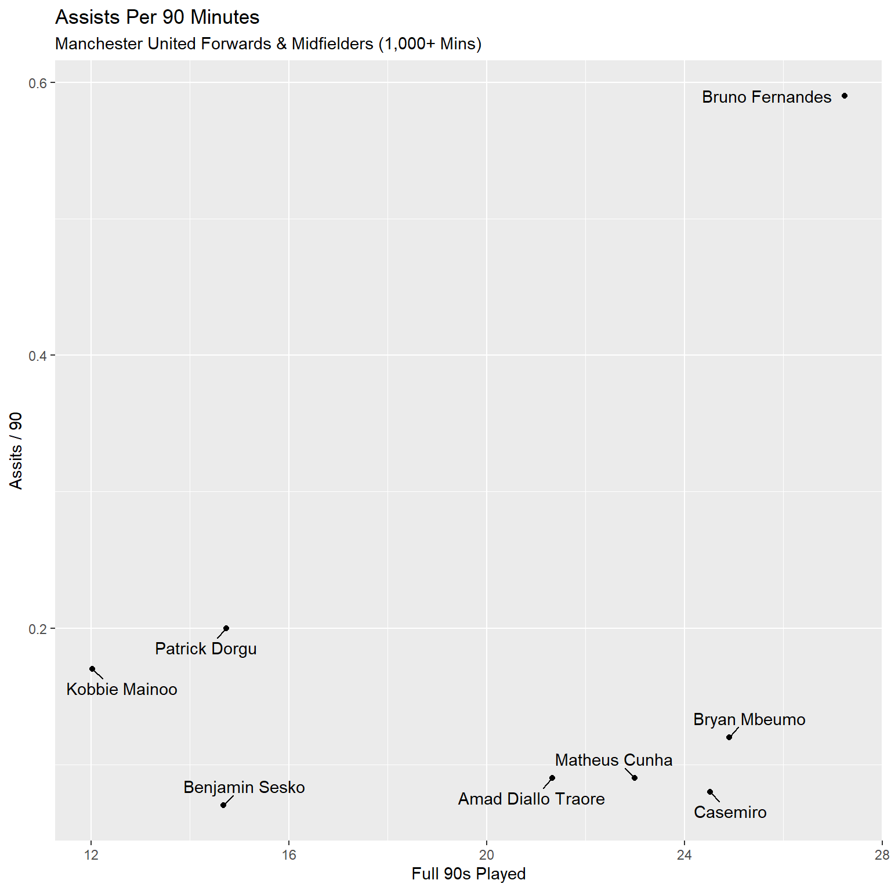

Code
library(tidyverse)
FWD_MID<-ggplot(MUFC2,aes(x=goals,y=xG,label=paste0(player,'(',goals,')')))+geom_point()+geom_text_repel(box.padding = 0.5)+labs(title = 'MUFC most clinical FWD/MID with over 1000 mins')
FWD_MID
Before we jump into the advanced stats, let’s start with a solid foundation. We’re looking at forwards and midfielders who have played at least 1,000 minutes this season.By focusing on players with a minimum of 1,000 minutes, we’re making sure to evaluate those who’ve had enough time on the pitch for their stats to truly reflect their performance.
library(tidyverse)
library(gt)
library(ggrepel)
MUFC <- read_csv2('team-players.csv')
MUFC2<-MUFC%>%filter(min>=1000)%>%filter(str_detect(position,'M')|str_detect(position,'F'))%>%mutate(xG=as.numeric(xG))%>%mutate(xA=as.numeric(xA))
MUFC2.1 <- gt(MUFC2) %>%
cols_label(
apps = "Appearances",
min = "Minutes",
sp90m = "Shots/90",
kp90 = "Key Passes/90",
xG = "Expected Goals",
xA = "Expected Assists",
xG90 = "xG/90",
xA90 = "xA/90"
)
MUFC2.1| number | player | position | Appearances | Minutes | goals | assists | Shots/90 | Key Passes/90 | Expected Goals | Expected Assists | xG/90 | xA/90 |
|---|---|---|---|---|---|---|---|---|---|---|---|---|
| 1 | Bryan Mbeumo | F M | 26 | 2241 | 9 | 3 | 2.41 | 1.53 | 9.66 | 4.32 | 0.39 | 0.17 |
| 2 | Benjamin Sesko | F | 26 | 1321 | 9 | 1 | 3.61 | 0.55 | 10.00 | 0.53 | 0.68 | 0.04 |
| 3 | Bruno Fernandes | M | 28 | 2452 | 8 | 16 | 2.68 | 3.74 | 11.16 | 13.04 | 0.41 | 0.48 |
| 4 | Casemiro | M | 29 | 2207 | 7 | 2 | 1.75 | 1.14 | 5.44 | 2.78 | 0.22 | 0.11 |
| 5 | Matheus Cunha | F M | 28 | 2069 | 7 | 2 | 3.13 | 1.09 | 5.40 | 2.56 | 0.24 | 0.11 |
| 7 | Patrick Dorgu | D M | 22 | 1327 | 3 | 3 | 1.36 | 1.63 | 2.08 | 2.65 | 0.14 | 0.18 |
| 9 | Amad Diallo Traore | D M | 25 | 1920 | 2 | 2 | 2.06 | 1.73 | 4.85 | 4.09 | 0.23 | 0.19 |
| 18 | Kobbie Mainoo | M | 22 | 1083 | 0 | 2 | 0.66 | 1.41 | 0.18 | 0.60 | 0.01 | 0.05 |
-Expected Goals (xG) estimates the quality of a scoring chance, while actual goals show how well a player finishes those chances. Comparing the two helps us see who is clinical in front of goal and who tends to miss opportunities.-
library(tidyverse)
FWD_MID<-ggplot(MUFC2,aes(x=goals,y=xG,label=paste0(player,'(',goals,')')))+geom_point()+geom_text_repel(box.padding = 0.5)+labs(title = 'MUFC most clinical FWD/MID with over 1000 mins')
FWD_MID
The Overachievers: Players like Casemiro and Matheus Cunha stand out for their efficiency. Each has scored 7 goals from around 5.4 xG, showing they’re converting tough chances at an elite level.
The Underperformer: Bruno Fernandes leads the team in xG with 11.16 but has only netted 8 goals. Although he’s creating excellent scoring opportunities, his finishing hasn’t quite matched up, leaving about 3 expected goals not scored.
Expected Assists (xA) estimates the likelihood that a pass will lead to a goal assist. When a player’s xA is higher than their actual assists, it means they’re setting up high-quality chances, but their teammates aren’t converting them.
FM_XA<-ggplot(MUFC2,aes(x=assists,y=xA,label=paste0(player,'(',assists,')')))+geom_point()+geom_text_repel(box.padding = 0.5)
FM_XA
Bruno is completely isolated as the team’s primary playmaker. Looking at the (Assists vs xA) chart, he is on an island with 16 actual assists from 13.04 xA.
Both Bryan Mbeumo (4.32 xA but only 3 assists) and Amad Diallo Traore (4.09 xA with just 2 assists) are doing a great job setting up chances, but their teammates aren’t finishing them off. They’re creating good opportunities, but unfortunately, those chances are being wasted.
By plotting Expected Goals against Expected Assists, we can categorize the exact attacking profile of every player in the squad:
XXG<-ggplot(MUFC2,aes(x=xG,y=xA,label=player))+geom_point()+geom_text_repel(box.padding = 0.5)+labs(title = 'Expected Goals v Expected Assists',y= 'Expected assists',x='Expected Goals')
XXG
Poacher: Benjamin Sesko sits far to the right (high xG) but at the very bottom (low xA). He exists purely to get on the end of chances, not to create them.
Dual Threat: Bruno Fernandes is elite in both categories. He is the only player shouldering the burden of both elite chance creation and elite shot volume.
Progessors: Players like Kobbie Mainoo sit in the bottom-left quadrant. Their value comes from ball progression and defensive stability rather than final-third output.
mufc5.1<-MUFC2%>%mutate(games_no.=round(as.numeric(min)/90,2))%>%mutate(GP90=round(goals/games_no.,2))%>%mutate(GA90=round(assists/games_no.,2))
ggplot(mufc5.1,aes(x=games_no.,y=GP90,label=player))+geom_point()+geom_text_repel(box.padding = 0.5)+labs(
title = "Goals Per 90 Minutes",
subtitle = "Manchester United Forwards & Midfielders (1,000+ Mins)",
x = "Full 90s Played",
y = "Goals / 90"
)
ggplot(mufc5.1,aes(x=games_no.,y=GA90,label=player))+geom_point()+geom_text_repel(box.padding = 0.5)+labs(
title = "Assists Per 90 Minutes",
subtitle = "Manchester United Forwards & Midfielders (1,000+ Mins)",
x = "Full 90s Played",
y = "Assits / 90"
)

Just looking at total goals can be misleading because it doesn’t account for how much time players have spent on the pitch. For example, Bryan Mbeumo and Benjamin Sesko both have 9 goals, which makes them seem equally dangerous. But when you break it down to goals per 90 minutes, a big difference in efficiency becomes clear. Sesko has been much more clinical in the time he’s had, scoring at a higher rate per game. Meanwhile, Mbeumo’s goal count is spread over more minutes, suggesting he’s less efficient in front of goal. Normalizing stats like this helps us get a clearer picture of a player’s true impact on the field, rather than just relying on raw totals.
Sesko is nearly twice as lethal on a minute-by-minute basis. Tactically, the manager must prioritize keeping Sesko on the pitch, as his attacking output per minute is unmatched by anyone else in the squad